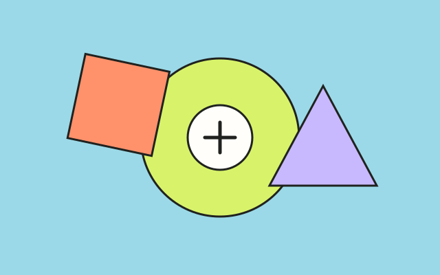

Personal Portfolio Website
Creating a website to introduce myself, organize my work, and practice the basics of web design and development.
STUDENT PORTFOLIO · UC RIVERSIDE
A UC Riverside student building new skills, exploring technology, and learning through hands-on projects.
01 / ABOUT
I'm a student at the University of California, Riverside, currently exploring different academic interests and figuring out where I want to focus.
This portfolio is a place to collect projects, document what I'm learning, and show how my skills develop over time. I'm interested in technology and design, and I like seeing an idea take shape into something people can actually use.
02 / PROJECTS & DEVELOPMENT
A snapshot of my current learning and interests.
Creating a website to introduce myself, organize my work, and practice the basics of web design and development.
Building stronger study habits, learning to manage projects, and connecting class assignments to practical skills.

Exploring how digital tools and thoughtful design can make information clearer and everyday tasks easier.
03 / EDUCATION
2025 — 2029 (EXPECTED)
Undergraduate student · Major undeclared
Currently exploring academic paths and developing a foundation for future study and work.
04 / INTERESTS
Technology and digital tools
Web design and creative projects
Building skills through coursework
LET'S CONNECT
For school or project-related inquiries, you can reach me by email.
finleyomahony@gmail.com